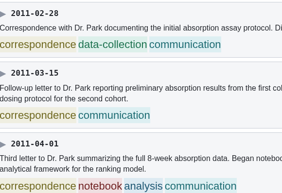
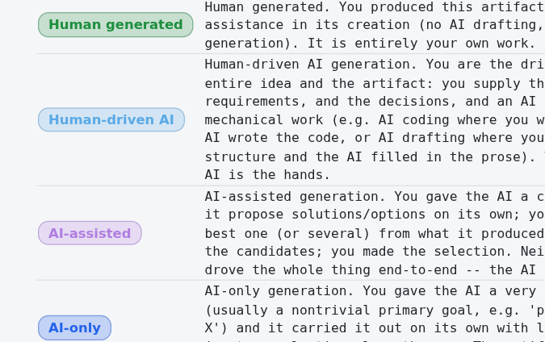
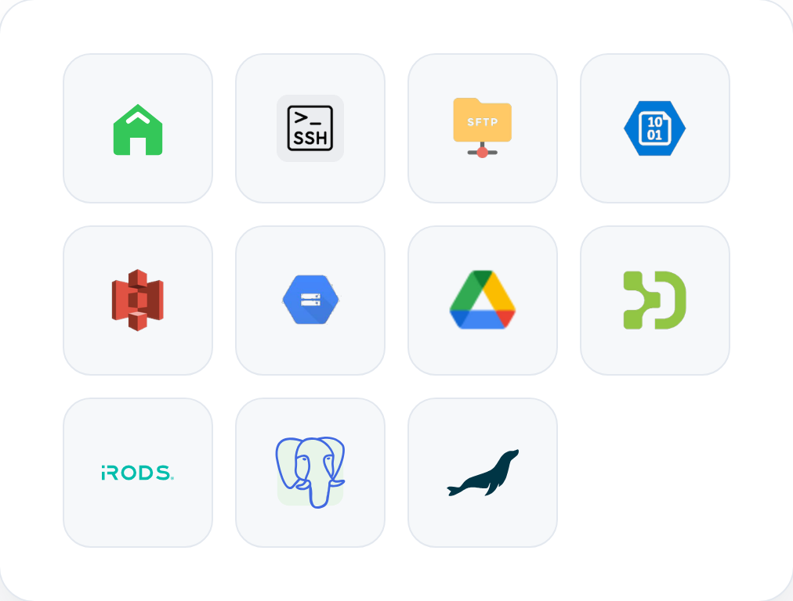

WorkSigned signs research work into a daily record using court-recognized methods that prove authorship and can be audited quickly by compliance and legal teams.
A complete record contains research files, research data, and research logs. AI tool usage, research emails, and research web search history are recorded in a tamper-resistant manner.
What the record contains
During record construction, WorkSigned monitors the contribution of AI tools towards the research as a whole, making audits and dispute-related tasks straightforward.
How AI contribution is evaluated
Signing methods are optimized to achieve a degree of certainty beyond reasonable legal doubt. Present a single portable file to any reviewer to enable instant comprehensive reviews.
How signing proofs workWorkSigned is cloud-free software designed to operate with zero exposure of sensitive data to external networks.
Read the deployment guideWorkSigned supports integration of local and cloud infrastructure into the research record.
How research data integration works
Our platform contains a wide array of productivity tools to aid the research and publication process.
What you can doVirtually all components of the WorkSigned's workflow and features are easily customizable.
What can be customizedThe whole pipeline in 90 seconds: connect the work, sign each day, seal it, and hand the record to anyone who should check it.
The full walkthroughEarly access is being offered to a small group of researchers and pilot institutions. To be considered, submit the details below.